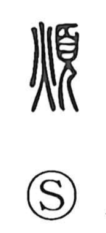

煩

Kun: wazurau, wazurawasu | On: han, bon
trouble ・ to be troubled ・ to worry ・ vexation
Explanation
煩 combines 火 and 頁. Here 火 is the sacred fire of purification, the flame ritually applied to a person to expel impurity—just as 赤 shows fire added to the human figure to cleanse, and 赦, with 攴 added to 赤, expresses the exorcising and pardoning of guilt. In 煩, this sacred fire is set beside 頁, the figure of a person in formal dress and ceremonial headgear bowing in reverence, so the graph portrays a rite for lifting away sorrow and trouble. From that ritual sense it came to mean trouble and vexation, the state of being worried or distressed.